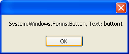
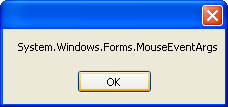

C# .NET Events
In programming terms, an Event is when something special happens. Inbuilt code gets activated when the event happens. The event is then said to be "Handled". The Events that we'll discuss in this section are called GUI Events (GUI stand for Graphic User Interface). They are things like clicking a mouse button, leaving a text box, right clicking, and many more. We'll start with the Click event of buttons.
The Click Event for Buttons
The click event gets activated when a button is clicked on. Examine the default code for a button:
private void button1_Click(object sender, EventArgs e)
{
}
In between the round brackets, we have this:
object sender, EventArgs e
The object keyword refers to the object which activated the event, a button in this case. This is being placed in a variable called sender. You can test this for yourself.
Start a new project. Add a button to your new form and double click it. Place the following code between the curly brackets:
MessageBox.Show( sender.ToString() );
We're just using the ToString method on the sender variable. Run your programme
and click the button. You should see this:

The Message is displaying which object was the sender of the event, as well as displaying the Text property of the sender: the button with the Text "button1".
The other argument in between the round brackets was this:
EventArgs e
EventArgs is a class. It's short for event arguments, and tells you which events was raised. The letter "e" sets up a variable to use this class. If you change your line of code to this:
MessageBox.Show( e.ToString() );
the message box will then display the following:

So clicking raises a Mouse Event Argument. C# .NET already knows what to do
with an event of this kind, so you don't need to write any special code yourself.
But what if you wanted to know which button was clicked, the left button or
the right?